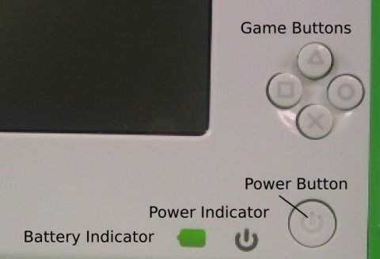

استرجاع الاعدادات الأصلية
تحذير : كل شيء على XO الخاص بك سيحذف إذا استخدمت جهاز تخزين USB والأسلوب التالي لتنصيب ملفات XO لذاكرة فلاش الخاص بك.
مع الربط بشبكة الإنترنت، يمكنك أن تعيد تحميل ملفات XO لإعدادات المصنع الافتراضية. ويسمى هذا الإجراء "تنظيف تثبيت" وصفها بمزيد من التفصيل في http://wiki.laptop.org/go/Clean-install_procedure. (يمكن تسليم تحديثات البرامج عن طريق تنظيف تثبيت أو بوسائل أخرى.)
تنظيف تثبيت يعمل من خلال إعادة تهيئة XO الخاص بك مع صورة البرمجيات المخزنة على جهاز تخزين USB.
قبل أن تبدأ
سوف تحتاج إلى :
- جهاز التخزين USB لديها ما لا يقل عن 1 غيغابايت من المساحة الفارغة.
- جهاز كمبيوتر مع إمكانية الوصول إلى الإنترنت بسرعة (يجب أن تسمح لك لتحميل المطلوبة 300 الى 400MB في غضون ساعة واحدة)
ثم ستقوم بتحميل ملفين الى ذاكرة USB. بعد ذلك ، فإن عملية التثبيت تأخذ حوالي عشر دقائق.
إعداد الجهاز الخاص التخزين USB
- حمل ملف نظام التشغيل و "fs.zip" إلى الكمبيوتر المحلي. يتم ضغط هذه الملفات ، حتى لا تفتح لهم -- بدلا من ذلك ، في المتصفح الخاص بك ، قم بزيارة صفحتين ويجب اتباع التعليمات :
- قم بنسخ الملفات (نظام الملفات FAT أو FAT32) الى جهاز التخزين USB.
- نبغي أن يحتوي جهاز التخزين بالضبط على ملفين اسمهما enxxx-n.img و fs.zip
- ينبغي أن تكون هذه الملفات تشغل ما لا يقل عن 300 ميغابايت من المساحة.
- فك جهاز التخزين USB وفصلها عن جهاز الكمبيوتر الخاص بك عندما يصبح الوضع آمنا للقيام بذلك..
وقد أعدت أنت نفسك الآن لاستعادة إعدادات المصنع الافتراضية في هذا الوقت.
إعادة تثبيت نظام التشغيل الخاص بك
- قم بإيقاف تشغيل الجهاز.
- قم بتوصيل الذاكرة USB الى جهازك.
- وبعد ذلك ، اضغط على كافة المفاتيح الأربعة فوق زر الطاقة، ومن ثم دفع زر الطاقة لتشغيل XO. سترى رسالة تخبرك الى "الافراج عن لعبة مفتاح للمتابعة". لا تزال حتى تشاهد هذه الرسالة.
- عملية تحميل ملفات تعمل تلقائيا ستظهر على الشاشة شبكة من المربعات، ثم سيتم عرض "إعادة التشغيل في 10 ثواني..." وسوف يتم اعادة تشغيل من جديد..
- أدخل اسمك الخاص بك، ثم انقر فوق التالي.
- انقر فوق رمز XO لتغيير الألوان ومن ثم انقر فوق التالي.
- اختياريا، قم بالاتصال بإنترنت، ثم استخدم لوحة التحكم لتحميل آخر اصدار للأنشطة.
إذا حدث خطأ ما
إذا كنت ترى رسالة "Bad hash at eblock #0"، فإن ذلك يعني أن الصورة التي نسخها إلى جهاز التخزين USB معطوب. يجب عليك تكرار الخطوات إعداد ، وربما مع جهاز تخزين USB ، ومن ثم إعادة المحاولة التثبيت.
تغيير النظام في التشغيل XO
بعد أن تقوم لاستعادة XO الخاص إلى إعدادات المصنع الافتراضية الخاصة به ، كنت قد قررت تغيير ، ترقية ، تخفيض الإصدار، أو استبدال نظام XO تماما الخاص بك التشغيل. هناك طرق عدة لتحقيق هذا الهدف ، وكلها تمت مناقشتها في http://wiki.laptop.org/go/Change_your_OS. قد تكون بعض هذه الآليات (مثل التحديث ، مثل olpc-update وغيرها) أن تكون أكثر كفاءة في استخدام عرض النطاق الترددي ويمكن فعله بسهولة.
Author : HowToFlash
© Anne Gentle 2008
Modifications:
adam hyde 2008
Brian Jordan 2008
A Holt 2008
Michael Stone 2008
Mitch Bradley 2008
Tom Boyle 2008
License : General Public License
Produced in FLOSS Manuals